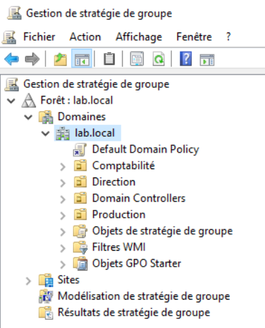
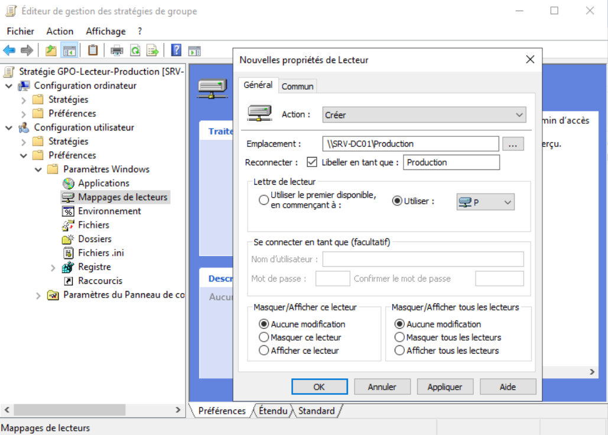
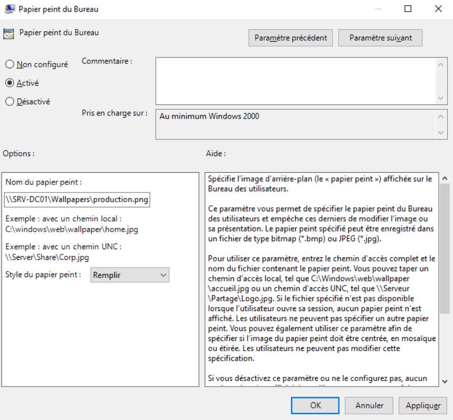
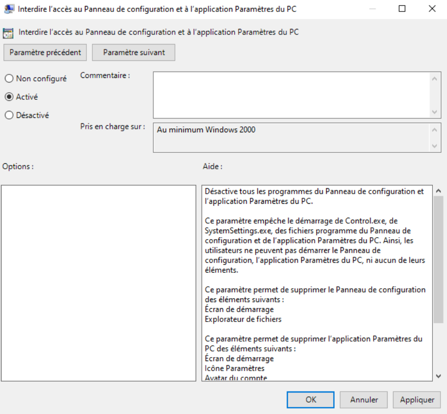
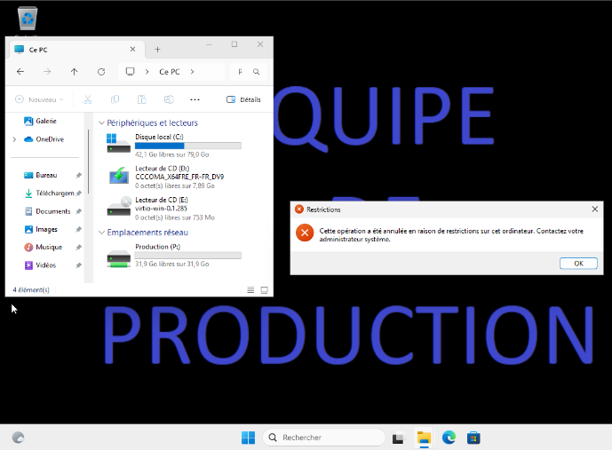
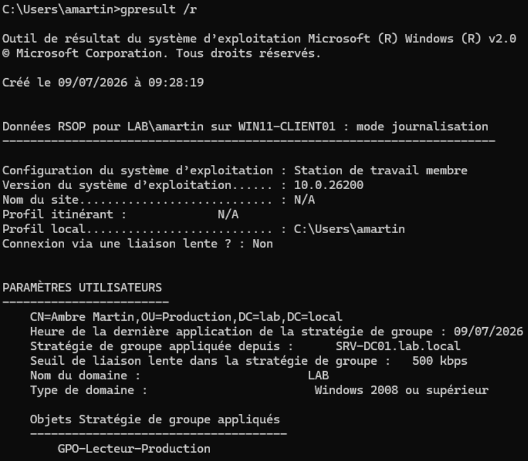

TP11 - GPO
Théorie : Cours - GPO Captures :
99-Captures/TP11/· Prérequis : TP10-Serveur-de-fichiers
Objectif
Mettre en place plusieurs stratégies de groupe (GPO) afin de centraliser l'administration des postes du domaine.
À l'issue de ce TP, les utilisateurs disposeront automatiquement :
- d'un lecteur réseau mappé selon leur service ;
- d'un fond d'écran commun à l'entreprise ;
- de restrictions limitant certaines actions sur le poste de travail.
Prérequis
- [v] TP10-Serveur-de-fichiers validé
Étapes
1. Vérification de l'arborescence Active Directory
Ouvrir :
Outils
→ Gestion de stratégie de groupe
Vérifier que les OU créées précédemment sont présentes.
Exemple :
lab.local
│
├── Direction
├── Production
└── Comptabilite

Organisation des unités d'organisation2. Création de la GPO "Lecteur réseau"
Créer un nouvel objet GPO, lié à l'OU Production et nommé :
GPO-Lecteur-Production
3. Mappage automatique du lecteur réseau
Modifier la GPO :
Configuration utilisateur
→ Préférences
→ Paramètres Windows
→ Mappages de lecteurs
Créer un nouveau lecteur.
Configurer :
| Paramètre | Valeur |
|---|---|
| Action | Créer |
| Emplacement | \\SRV-DC01\Production |
| Lettre | P: |
| Reconnecter | Oui |

Création du lecteur réseau4. Déploiement d'un fond d'écran
Créer un dossier partagé contenant une image.
Exemple :
D:\Wallpapers
Partager ce dossier en lecture.
Copier une image :
production.png
Modifier la GPO :
Configuration utilisateur
→ Stratégies
→ Modèles d'administration
→ Bureau
→ Bureau
Configurer :
Papier peint du Bureau
Chemin :
\\SRV-DC01\Wallpapers\production.png
Style :
Remplir

Configuration du fond d'écran5. Désactivation du Panneau de configuration
Toujours dans la même GPO :
Configuration utilisateur
→ Stratégies
→ Modèles d'administration
→ Panneau de configuration
Activer :
Interdire l'accès au Panneau de configuration et aux Paramètres du PC

Restriction du Panneau de configuration6. Application des stratégies
Sur WIN11-CLIENT01, ouvrir une invite de commandes.
Exécuter :
gpupdate /force
Déconnecter puis reconnecter la session.
Vérifier :
- apparition du lecteur
P: - application du fond d'écran
- impossibilité d'ouvrir le Panneau de configuration

Test de la GPO7. Vérification des GPO appliquées
Toujours sur le client :
gpresult /r
Vérifier que :
GPO-Lecteur-Production
apparaît dans les stratégies appliquées.
Ouvrir également :
rsop.msc
Contrôler les paramètres effectivement appliqués.

Résultat des stratégiesValidation
- [v] Une GPO est créée et liée à une OU
- [v] Le lecteur réseau est créé automatiquement
- [v] Le fond d'écran est appliqué
- [v] Le Panneau de configuration est inaccessible
- [v]
gpresultaffiche la GPO - [v]
rsop.mscconfirme son application
Pour aller plus loin
Créer d'autres GPO destinée aux OU Direction et Comptabilite.
Progression
| Étape | Lien |
|---|---|
| Prérequis | TP10-Serveur-de-fichiers |
| Suite recommandée | → TP12-PowerShell |
| Branches | Cours - Active Directory |
| Théorie | Cours - GPO |
Suivi : Progression